건설안전산업기사 (2019-03-03 기출문제)
1과목: 산업안전관리론
1. 제조업자는 제조물의 결함으로 인하여 생명･신체 또는 재산에 손해를 입은 자에게 그 손해를 배상하여야 하는데 이를 무엇이라 하는가? (단, 당해 제조물에 대해서만 발생한 손해는 제외한다.)
- 입증 책임
- 담보 책임
- 연대 책임
- 제조물 책임
(정답률: 86%)

2. 재해예방의 4원칙에 해당하지 않는 것은?
- 예방 가능의 원칙
- 손실 우연의 원칙
- 원인 계기의 원칙
- 선취 해결의 원칙
(정답률: 78%)
3. 누전차단장치 등과 같은 안전장치를 정해진 순서에 따라 작동 시키고 동작상황의 양부를 확인하는 점검은?
- 외관점검
- 작동점검
- 기술점검
- 종합점검
(정답률: 86%)
4. 모랄 서베이(Moral Survey)의 효용이 아닌것은?
- 조직 또는 구성원의 성과를 비교･분석한다.
- 종업원의 정화(Catharsis) 작용을 촉진시킨다.
- 경영관리를 개선하는 데에 대한 자료를 얻는다.
- 근로자의 심리 또는 욕구를 파악하여 불만을 해소하고, 노동의욕을 높인다.
(정답률: 72%)
5. 재해사례연구에 관한 설명으로 틀린 것은?
- 재해사례연구는 주관적이며 정확성이 있어야 한다.
- 문제점과 재해요인의 분석은 과학적이고, 신뢰성이 있어야 한다.
- 재해사례를 과제로 하여 그 사고와 배경을 체계적으로 파악한다.
- 재해요인을 규명하여 분석하고 그에 대한 대책을 세운다.
(정답률: 84%)
6. 산업안전보건법령상 특별안전･보건 교육의 대상 작업에 해당하지 않는 것은?
- 석면해체･제거작업
- 밀폐된 장소에서 하는 용접작업
- 화학설비 취급품의 검수･확인 작업
- 2m 이상의 콘크리트 인공구조물의 해체
(정답률: 71%)
7. 안전교육의 3단계에서 생활지도, 작업동작지도 등을 통한 안전의 습관화를 위한 교육은?
- 지식교육
- 기능교육
- 태도교육
- 인성교육
(정답률: 78%)
8. 주의(Attention)의 특징 중 여러 종류의 자극을 자각할 때, 소수의 특정한 것에 한하여 주의가 집중되는 것은?
- 선택성
- 방향성
- 변동성
- 검출성
(정답률: 76%)
9. 재해발생 형태별 분류 중 물건이 주체가 되어 사람이 상해를 입는 경우에 해당되는 것은?
- 추락
- 전도
- 충돌
- 낙하･비래
(정답률: 75%)
10. 위험예지훈련 중 TBM(Tool Box Meeting)에 관한 설명으로 틀린 것은?
- 작업 장소에서 원형의형태를 만들어 실시한다.
- 통상 작업시작 전･후 10분 정도 시간으로 미팅한다.
- 토의는 다수인(30인)이 함께 수행한다.
- 근로자 모두가 말하고 스스로 생각하고 “이렇게 하자”라고 합의한 내용이 되어야 한다.
(정답률: 82%)
11. 인간의 적응기제(適應機制)에 포함되지 않는 것은?
- 갈등(conflict)
- 억압(repression)
- 공격(aggression)
- 합리화(rationalization)
(정답률: 50%)
12. 산업안전보건법상 직업병 유소견자가 발생하거나 다수 발생할 우려가 있는 경우에 실시하는 건강진단은?
- 특별 건강진단
- 일반 건강진단
- 임시 건강진단
- 채용시 건강진단
(정답률: 50%)
13. 객관적인 위험을 자기 나름대로 판정해서 의지결정을 하고 행동에 옮기는 인간의 심리특성은?
- 세이프 테이킹(safe taking)
- 액션 테이킹(action taking)
- 리스크 테이킹(risk taking)
- 휴먼 테이킹(human taking)
(정답률: 71%)
14. 방독면마스크의 정화통 색상으로 틀린것은?
- 유기화합물용-갈색
- 할로겐용-회색
- 황화수소용-회색
- 암모니아용-노란색
(정답률: 64%)
15. 다음 중 스트레스(Stress)에 관한 설명으로 가장 적절한 것은?
- 스트레스는 나쁜 일에서만 발생한다.
- 스트레스는 부정적인 측면만 가지고 있다.
- 스트레스는 직무몰입과 생산성 감소의 직접적인 원인이 된다.
- 스트레스는 상황에 직면하는 기회가 많을수록 스트레스 발생 가능성은 낮아진다.
(정답률: 81%)
16. 하인리히의 재해구성비율에 따라 경상사고가 87건 발생하였다면 무상해사고는 몇 건이 발생하였겠는가?
- 300건
- 600건
- 900건
- 1200건
(정답률: 75%)
17. 산업안전보건법상 안전･보건 표지에서 기본모형의 색상이 빨강이 아닌 것은?
- 산화성물질 경고
- 화기금지
- 탑승금지
- 고온 경고
(정답률: 58%)
18. 하버드 학파의 5단계 교수법에 해당되지 않는 것은?
- 교시(Presentation)
- 연합(Association)
- 추론(Reasoning)
- 총괄(Generalization)
(정답률: 71%)
19. 안전을 위한 동기부여로 틀린 것은?
- 기능을 숙달시킨다.
- 경쟁과 협동을 유도한다.
- 상벌제도를 합리적으로 시행한다.
- 안전목표를 명확히 설정하여 주지시킨다.
(정답률: 60%)
20. OJT(On the Job Training)의 특징이 아닌 것은?
- 훈련에 필요한 업무의 계속성이 끊어지지 않는다.
- 교육효과가 업무에 신속히 반영된다.
- 다수의 근로자들을 대상으로 동시에 조직적 훈련이 가능하다.
- 개개인에게 적절한 지도훈련이 가능하다.
(정답률: 78%)
2과목: 인간공학 및 시스템안전공학
21. 다음 그림 중 형상 암호화된 조종 장치에서 단회전용 조종 장치로 가장 적절한 것은?
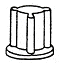
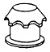
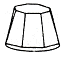
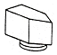
(정답률: 59%)
22. 위험조정을 위해 필요한 기술은 조직형태에 따라 다양하며 4가지로 분류하였을 때 이에 속하지 않는 것은?
- 전가(transfer)
- 보류(retention)
- 계속(continuation)
- 감축(reduction)
(정답률: 59%)
23. FT도에 사용되는 기호 중 입력신호가 생긴 후, 일정시간이 지속된 후에 출력이 생기는 것을 나타내는 것은?
- OR게이트
- 위험 지속 기호
- 억제 게이트
- 배타적 OR 게이트
(정답률: 62%)
24. 전통적인 인간-기계(Man-Machin) 체계의 대표적 유형과 거리가 먼 것은?
- 수동체계
- 기계화 체계
- 자동체계
- 인공지능 체계
(정답률: 73%)
25. 암호체계 사용상의 일반적인 지침에 해당하지 않는 것은?
- 암호의 검출성
- 부호의 양립성
- 암호의 표준화
- 암호의 단일 차원화
(정답률: 62%)
26. 인간-기계시스템에 대한 평가에서 평가 척도나 기준(criteria) 으로서 관심의 대상이 되는 변수는?
- 독립변수
- 종속변수
- 확률변수
- 통제변수
(정답률: 52%)
27. 작업장에서 구성요소를 배치하는 인간공학적 원칙과 가장 거리가 먼 것은?
- 중요도의 원칙
- 선입선출의 원칙
- 기능성의 원칙
- 사용빈도의 원칙
(정답률: 72%)
28. 통제표시비(control/display ratio)를 설계할 때 고려하는 요소에 관한 설명으로 틀린 것은?
- 통표시비가 낮다는 것은 민감한 장치라는 것을 의미한다.
- 목시거리(目示距離)가 길면 길수록 조절의 정확도는 떨어진다.
- 짧은 주행 시간 내에 공차의 인정범위를 초과하지 않는 계기를 마련한다.
- 계기의 조절시간이 짧게 소요되도록 계기의 크기(size)는 항상 작게 설계한다.
(정답률: 73%)
29. 다음 FTA 그림에서 a, b, c의 부품고장율이 각각 0.01일 때, 최소 컷셋(minimal cut sets)과 신뢰도로 옳은 것은?
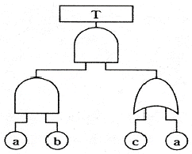
- {a, b}, R(t) = 99.99%
- {a, b, c}, R(t) = 98.99%
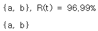
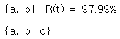
(정답률: 52%)
30. 신뢰성과 보전성을 효과적으로 개선하기 위해 작성하는 보전기록 자료로서 가장 거리가 먼 것은?
- 자재관리표
- MTBF 분석표
- 설비이력카드
- 고장원인대책표
(정답률: 68%)
31. 동전던지기에서 앞면이 나올 확률 P(앞) = 0.6이고, 뒷면이 나올 확률 P(뒤) = 0.4일 때, 앞면과 뒷면이 나올 사건의 정보량을 각각 맞게 나타낸 것은?
- 앞면 : 0.10 bit, 뒷면 : 1.00 bit
- 앞면 : 0.74 bit, 뒷면 : 1.32 bit
- 앞면 : 0.32 bit, 뒷면 : 0.74 bit
- 앞면 : 2.00 bit, 뒷면 : 1.00 bit
(정답률: 63%)
32. 인간-기계 시스템에서의 신뢰도 유지 방안으로 가장 거리가 먼 것은?
- lock system
- fail-safe system
- fool-proof system
- risk assessment system
(정답률: 58%)
33. 다음의 설명에서 ( )안의 내용을 맞게 나열한 것은?
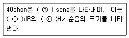
- ㉠ 1, ㉡ 40, ㉢ 1000
- ㉠ 1, ㉡ 32, ㉢ 1000
- ㉠ 2, ㉡ 40, ㉢ 2000
- ㉠ 2, ㉡ 32, ㉢ 2000
(정답률: 69%)
34. 자동차나 항공기의 앞유리 혹은 차양판 등에 정보를 중첩 투사하는 표시장치는?
- CRT
- LCD
- HUD
- LED
(정답률: 77%)
35. 어떤 결함수의 쌍대결함수를 구하고, 컷셋을 찾아내어 결함(사고)을 예방할 수 있는 최소의 조합을 의미하는 것은?
- 최대 컷셋
- 최소 컷셋
- 최대 패스셋
- 최소 패스셋
(정답률: 56%)
36. 일반적인 수공구의 설계원칙으로 볼 수 없는 것은?
- 손목을 곧게 유지한다.
- 반복적인 손가락 동작을 피한다.
- 사용이 용이한 검지만 주로 사용한다.
- 손잡이는 접촉면적을 가능하면 크게 한다.
(정답률: 78%)
37. 체내에서 유기물을 합성하거나 분해하는 데는 반드시 에너지의 전환이 뒤따른다. 이것을 무엇이라 하는가?
- 에너지 변환
- 에너지 합성
- 에너지 대사
- 에너지 소비
(정답률: 68%)
38. 광원으로부터의 직사 휘광을 줄이기 위한 방법으로 적절하지 않은 것은?
- 휘광원 주위를 어둡게 한다.
- 가리개, 갓, 차양 등을 사용한다.
- 광원을 시선에서 멀리 위치시킨다.
- 광원의 수는 늘리고 휘도는 줄인다.
(정답률: 59%)
39. 다음 중 연마작업장의 가장 소극적인 소음대책은?
- 음향 처리제를 사용할 것
- 방음 보호 용구를 착용할 것
- 덮개를 씌우거나 창문을 닫을 것
- 소음원으로부터 적절하게 배치할 것
(정답률: 59%)
40. 화학설비의 안전성 평가 과정에서 제 3단계인 정량적 평가 항목에 해당되는 것은?
- 목록
- 공정계통도
- 화학설비용량
- 건조물의 도면
(정답률: 73%)
3과목: 건설시공학
41. 경량골재콘크리트 공사에 관한 사항으로 옳지 않은 것은?
- 슬럼프 값은 180mm 이하로 한다.
- 경량골재는 배합 전 완전히 건조시켜야 한다.
- 경량골재 콘크리트는 공기연행 콘크리트로 하는 것을 원칙으로 한다.
- 물-결합재비의 최대값은 60%로 한다.
(정답률: 61%)
42. 벽과 바닥의 콘크리트 타설을 한 번에 가능하도록 벽체용 거푸집과 슬래브 거푸집을 일체로 제작하여 한 번에 설치하고 해체할 수 있도록 한 시스템거푸집은 ?
- 갱폼
- 클라이밍폼
- 슬립폼
- 터널폼
(정답률: 62%)
43. 기존건물에 근접하여 구조물을 구축할 때 기존건물의 균열 및 파괴를 방지할 목적으로 지하에 실시하는 보강공법은?
- BH(Boring Hole)
- 베노토(Benoto) 공법
- 언더피닝(Under Pinning) 공법
- 심초공법
(정답률: 77%)
44. 철골조에서 판보(plate girder)의 보강재에 해당되지 않는 것은?
- 커버 플레이트
- 윙 플레이트
- 필러 플레이트
- 스티프너
(정답률: 51%)
45. 다음 중 가장 깊은 기초지정은?
- 우물통식 지정
- 긴 주춧돌 지정
- 잡석 지정
- 자갈 지정
(정답률: 73%)
46. 시공계획 시 우선 고려하지 않아도 되는 것은?
- 상세 공정표의 작성
- 노무, 기계, 재로 등의 조달, 사용 계획에 따는 수송계획 수립
- 현장관리 조직과 인사계획 수립
- 시공도의 작성
(정답률: 41%)
47. 다음과 같은 조건에서 콘크리트의 압축강도를 시험하지 않을 경우 거푸집널의 해체시기로 옳은 것은? (단, 기초, 보, 기둥 및 벽의 측면)
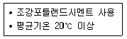
- 2일
- 3일
- 4일
- 6일
(정답률: 67%)
48. 철골공사와 직접적으로 관련된 용어가 아닌 것은?
- 토크렌치
- 너트 회전법
- 적산온도
- 스터드 볼트
(정답률: 74%)
49. 공사에 필요한 특기 시방서에 기재하지 않아도 되는 사항은?
- 인도 시 검사 및 인도시기
- 각 부위별 시공방법
- 각 부위별 사용재료
- 사용재료의 품질
(정답률: 68%)
50. 지반조사 방법 중 보링에 관한 설명으로 옳지 않은 것은?
- 보링은 지질이나 지층의 상태를 깊은 곳까지도 정확하게 확인할 수 있다.
- 회전식보링은 불교란시료 채취, 암석 채취 등에 많이 쓰인다.
- 충격식 보링은 토사를 분쇄하지 않고 연속적으로 채취할 수 있으므로 가장 정확한 방법이다.
- 수세식 보링은 30m까지의 연질층에 주로 쓰인다.
(정답률: 68%)
51. 철근의 이음을 검사할 때 가스압접이음의 검사항목이 아닌 것은?
- 이음위치
- 이음길이
- 외관검사
- 인장시험
(정답률: 46%)
52. 전체공사의 진척이 원활하며 공사의 시공 및 책임한계가 명확하여 공사관리가 쉽고 하도급의 선택이 용이한 도급제도는?
- 공정별분할도급
- 일식도급
- 단가도급
- 공구별분할도급
(정답률: 61%)
53. 콘크리트 타설 작업에 있어 진동 다짐을 하는 목적으로 옳은 것은?
- 콘크리트 점도를 증진시켜 준다
- 시멘트를 절약시킨다.
- 콘크리트의 동결을 방지하고 경화를 촉진시킨다.
- 콘크리트의 거푸집 구석구석까지 충전시킨다.
(정답률: 73%)
54. 다음 철근 배근의 오류 중에서 구조적으로 가장 위험한 것은?
- 보늑근의 겹침
- 기둥주근의 겹침
- 보하부 주근의 처짐
- 기둥대근의 겹침
(정답률: 67%)
55. 토공사 기계에 관한 설명으로 옳지 않은 것은?
- 파워쇼벨(power shovel)은 위치한 지면보다 높은 곳의 굴착에 유리하다.
- 드래그쇼벨(drag shovel)은 대형기초굴착에서 협소한 장소의 줄기초파기, 배수관 매설공사 등에 다양하게 사용된다.
- 클램쉘(clam shell)으 연한 지반에는 사용이 가능하나 경질층에는 부적당하다.
- 드래그라인(drag line)은 배토판을 부착시켜 정지작업에 사용된다.
(정답률: 53%)
56. 고력볼트 접합에서 축부가 굵게 되어 있어 볼트 구멍에 빈틈이 남지 않도록 고안된 볼트는?
- TC볼트
- PI볼트
- 그립볼트
- 지압형 고장력볼트
(정답률: 68%)
57. 다음 용어에 대한 정의로 옳지 않은 것은?
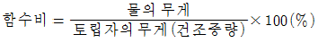
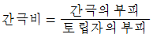
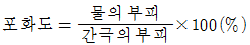
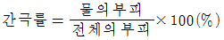
(정답률: 55%)
58. 철골작업에서 사용되는 철골세우기용 기계로 옳은 것은?
- 진폴(gin pole)
- 앵글 도저(angle dozer)
- 모터 그레이더(motor grader)
- 캐리올 스크레이퍼(carryall scraper)
(정답률: 66%)
59. 시공과정상 불가피하게 콘크리트를 이어치기할 때 서로 일체화 되지 않아 발생하는 시공불량 이음부를 무엇이라고 하는가?
- 컨스트럭션 조인트(construction joint)
- 콜드 조인트(cold joint)
- 컨트롤 조인트(control joint)
- 익스팬션 조인트(expansion joint)
(정답률: 69%)
60. 굳지 않은 콘크리트가 거푸집에 미치는 측압에 관한 설명으로 옳지 않은 것은?
- 묽은비빔 콘크리트가 측압은 크다.
- 온도가 높을수록 측압은 크다.
- 콘크리트의 타설 속도가 빠를수록 측압은 크다.
- 측압은 굳지 않은 콘크리트의 높이가 높을수록 커지는 것이나 어느 일정한 높이에 이르면 측압의 증대는 없다.
(정답률: 65%)
4과목: 건설재료학
61. 목재와 철강재 양쪽 모두에 사용할 수 있는 도료가 아닌 것은?
- 래커에나멜
- 유성페인트
- 에나멜페인트
- 광명단
(정답률: 64%)
62. 유리를 600℃ 이상의 연화점까지 가열하여 특수한 장치로 균등히 공기를 내뿜어 급랭시킨 것으로 강하고 또한 파괴되어도 세립상으로 되는 유리는?
- 에칭유리
- 망입유리
- 강화유리
- 복층유리
(정답률: 70%)
63. 미장재료의 분류에서 물과 화학반응 하여 경화하는 수경성 재료가 아닌 것은?
- 순석고플라스터
- 경석고플라스터
- 혼합석고플라스터
- 돌로마이트플라스터
(정답률: 68%)
64. 다음 중 천연 접착제로 볼 수 없는 것은?
- 전분
- 아교
- 멜라민수지
- 카세인
(정답률: 60%)
65. 알루미늄과 그 합금 재료의 일반적인 성질에 관한 설명으로 옳지 않은 것은?
- 산, 알칼리에 강하다.
- 내화성이 작다.
- 열･전기 전도성이 크다.
- 비중이 철의 약 1/3이다.
(정답률: 68%)
66. 잔골재를 각 상태에서 계량한 결과 그 무게가 다음과 같을 때 이 골재의 유효 흡수율은?
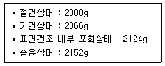
- 1.32%
- 2.81%
- 6.20%
- 7.60%
(정답률: 56%)
67. 건축재료의 화학적 조성에 의한 분류에서 유기재료에 속하지 않는 것은?
- 목재
- 아스팔트
- 플라스틱
- 시멘트
(정답률: 47%)
68. 유기천연섬유 또는 석면섬유를 결합한 원지에 연질의 스트레이트 아스팔트를 침투시킨 것으로 아스팔트방수 중간층재로 사용되는 것은?
- 아스팔트 펠트
- 아스팔트 컴파운드
- 아스팔트 프라이머
- 아스팔트 루핑
(정답률: 57%)
69. 목재 가공품 중 판재와 각재를 접착하여 만든 것으로 보, 기둥, 아치, 트러스 등의 구조부재로 사용되는 것은?
- 파키트 패널
- 집성목재
- 파티클 보드
- 석고 보드
(정답률: 60%)
70. 다음 시멘트 조정화합물 중 수화속도가 느리고 수화열도 작게 해주는 성분은?
- 규산 3칼슘
- 규산 2칼슘
- 알루민산 3칼슘
- 알루민산 4칼슘
(정답률: 54%)
71. 미장공사에서 코너비드가 사용되는 곳은?
- 계단손잡이
- 기둥의 모서리
- 거푸집 가장자리
- 화장실 칸막이
(정답률: 75%)
72. 물 - 시멘트 비 65%로 콘크리트 1m3를 만드는데 필요한 물의 양으로 적당한 것은? (단, 콘크리트 1m3당 시멘트 8포대이며, 1포대는 40kg임)
- 0.1m3
- 0.2m3
- 0.3m3
- 0.4m3
(정답률: 49%)
73. 표면에 여러 가지 직물무늬 모양이 나타나게 만든 타일로서 무늬, 형상 또는 색상이 다양하여 주로 내장타일로 쓰이는 것은?
- 폴리싱타일
- 태피스트리타일
- 논슬립타일
- 모자이크타일
(정답률: 49%)
74. 콘크리트의 워커빌리티에 영향을 주는 인자에 관한 설명으로 옳지 않은 것은?
- 단위수량이 많을수록 콘크리트의 컨시스턴시는 커진다.
- 일반적으로 부배합의 경우는 빈배합의 경우보다 콘크리트의 플라스티서티가 증가하므로 워커빌리티가 좋다고 할 수 있다.
- AE제나 감수제에 의해 콘크리트 중에 연행된 미세한 공기는 볼베어링 작용을 통해 콘크리트의 워커빌리티를 개선한다.
- 둥근형상의 강자갈의 경우보다 편평하고 세장한 입형의 골재를 사용할 경우 워커빌리티가 개선된다.
(정답률: 50%)
75. 점토 제품에 관한 설명으로 옳지 않은 것은?
- 점토의 주요 구성 성분은 알루미나, 규산이다.
- 점토입자가 미세할수록 가소성이 좋으며 가소성이 너무 크면 샤모트 등을 혼합 사용한다.
- 점토제품의 소성온도는 도기질의 경우 1230~1460℃ 정도이며, 자기질은 이보다 현저히 낮다.
- 소성온도는 점토의 성분이나 제품에 따라 다르며, 온도측정은 제게르 콘(Seger cone)으로 한다.
(정답률: 57%)
76. 접착제를 사용할 때의 주의사항으로 옳지 않은 것은?
- 피착제의 표면은 가능한 한 습기가 없는 건조상태로 한다.
- 용제, 희석제를 사용할 경우 과도하게 희석시키지 않도록 한다.
- 용제성의 접착제는 도포 후 용제가 휘발한 적당한 시간에 접착시킨다.
- 접착처리 후 일정한 시간 내에는 가능한 한 압축을 피해야 한다.
(정답률: 62%)
77. 목재의 역학적 성질에 관한 설명으로 옳지 않은 것은?
- 섬유 평행방향의 휨 강도와 전단강도는 거의 같다.
- 강도와 탄성은 가력방향과 섬유방향과의 관계에 따라 현저한 차이가 있다.
- 섬유에 평행방향의 인장강도는 압축강도보다 크다.
- 목재의 강도는 일반적으로 비중에 비례한다.
(정답률: 54%)
78. 단열재의 특성과 관련된 전열의 3요소와 거리가 먼 것은?
- 전도
- 대류
- 복사
- 결로
(정답률: 69%)
79. 비철금속 중 동(銅)에 관한 설명으로 옳지 않은 것은?
- 맑은 물에는 침식되나 해수에는 침식되지 않는다.
- 전･연성이 좋아 가공하기 쉬운 편이다.
- 철강보다 내식성 우수하다.
- 건축재료로는 아연 또는 주석 등을 활용한 합금을 주로 사용한다.
(정답률: 68%)
80. 화성암의 일종으로 내구성 및 강도가 크고 외관이 수려하며, 절리의 거리가 비교적 커서 대재를 얻을 수 있으나, 함유광물의 열팽창계수가 달라 내화성이 약한 석재는?
- 안산암
- 사암
- 화강암
- 응회암
(정답률: 63%)
5과목: 건설안전기술
81. 산업안전보건관리비 중 안전시설비 등의 항목에서 사용가능한 내역은?
- 외부인 출입금지, 공사장 경계표시를 위한 가설울타리
- 비계･통로･계단에 추가 설치하는 추락방지용 안전난간
- 절토부 및 성토부 등의 토사유실 방지를 위한 설비
- 공사 목적물의 품질 확보 또는 건설장비 자체의 운행 감시, 공사 진척상황 확인, 방범 등의 목적을 가진 CCTV 등 감시용 장비
(정답률: 63%)
82. 콘크리트 타설용 거푸집에 작용하는 외력 중 연직방향 하중이 아닌 것은?
- 고정하중
- 충격하중
- 작업하중
- 풍하중
(정답률: 74%)
83. 유해위험방지계획서를 제출해야 하는 공사의 기준으로 옳지 않은 것은 ?
- 최대 지간길이 30m 이상인 교량 건설 등 공사
- 깊이 10m 이상인 굴착공사
- 터널 건설 등의 공사
- 다목적댐, 발전용댐 및 저수용량 2천만톤 이상의 용수 전용 댐, 지방상수도 전용 댐 건설 등의 공사
(정답률: 66%)
84. 철골공사에서 용접작업을 실시함에 있어 전격예방을 위한 안전조치 중 옳지 않은 것은?
- 전격방지를 위해 자동전격방지기를 설치한다.
- 우천, 강설시에는 야외작업을 중단한다.
- 개로 전압이 낮은 교류 용접기는 사용하지 않는다.
- 절연 홀더(Holder)를 사용한다.
(정답률: 72%)
85. 흙막이 가시설의 버팀대(Strut)의 변형을 측정하는 계측기에 해당하는 것은?
- Water level meter
- Strain gauge
- Piezometer
- Load cell
(정답률: 51%)
86. 흙막이지보공을 설치하였을 때 정기적으로 점검하고 이상을 발견하면 즉시 보수하여야 하는 사항으로 거리가 먼 것은?
- 부재의 손상 변형, 부식, 변위 및 탈락의 유무와 상태
- 부재의 접속부, 부착부 및 교차부의 상태
- 침하의 정도
- 발판의 지지 상태
(정답률: 55%)
87. 유한사면에서 사면기울기가 비교적 완만한 점성토에서 주로 발생되는 사면파괴의 형태는?
- 저부파괴
- 사면선단파괴
- 사면내파괴
- 국부전단파괴
(정답률: 42%)
88. 말비계를 조립하여 사용하는 경우의 준수사항으로 옳지 않은 것은?
- 지주부재의 하단에는 미끄럼 방지장치를 할 것
- 지주부재와 수평면과의 기울기는 85° 이하로 할 것
- 말비계의 높이가 2m를 초과할 경우에는 작업발판의 폭을 40cm 이상으로 할 것
- 지주부재와 지주부재 사이를 고정시키는 보조부재를 설치할 것
(정답률: 70%)
89. 사다리식 통로 등을 설치하는 경우 준수해야 할 기준으로 옳지 않은 것은?
- 접이식 사다리 기둥은 사용 시 접혀지거나 펼쳐지지 않도록 철물 등을 사용하여 견고하게 조치할 것
- 발판과 벽과의 사이는 25cm 이상의 간격을 유지할 것
- 폭은 30cm 이상으로 할 것
- 사다리식 통로의 길이가 10m 이상인 경우에는 5m 이내마다 계단참을 설치할 것
(정답률: 62%)
90. 지반조사의 방법 중 지반을 강관으로 천공하고 토사를 채취 후 여러 가지 시험을 시행하여 지반의 토질 분포, 흙의 층상과 구성 등을 알 수 있는 것은?
- 보링
- 표준관입시험
- 베인테스트
- 평판재하시험
(정답률: 39%)
91. 추락방지망의 달기로프르 지지점에 부착할 때 지지점의 간격이 1.5m인 경우 지지덤의 강도는 최소 얼마 이상이어야 하는가?
- 200kg
- 300kg
- 400kg
- 500kg
(정답률: 54%)
92. 철골작업을 중지하여야 하는 제한 기준에 해당되지 않는 것은?
- 풍속이 초당 10m 이상인 경우
- 강우량이 시간당 1mm 이상인 경우
- 강설량이 시간당 1cm 이상인 경우
- 소음이 65dB 이상인 경우
(정답률: 72%)
93. 화물을 적재하는 경우에 준수하여야 하는 사항으로 옳지 않은 것은?
- 침하 우려가 없는 튼튼한 기반 위에 적재할 것
- 건물의 칸막이나 벽 등이 화물의 압력에 견딜 만큼의 강도를 지니지 아니한 경우에는 칸막이나 벽에 기대어 적재하지 않도록 할 것
- 불안정할 정도로 높이 쌓아 올리지 말 것
- 편하중이 발생하도록 쌓아 적재 효율을 높일 것
(정답률: 72%)
94. 강관틀비계의 높이가 20m를 초과하는 경우 주틀간의 간격은 최대 얼마 이하로 사용해야 하는가?
- 1.0m
- 1.5m
- 1.8m
- 2.0m
(정답률: 41%)
95. 타워크레인의 운전작업을 중지하여야 하는 순간풍속기준으로 옳은 것은?
- 초당 10m 초과
- 초당 12m 초과
- 초당 15m 초과
- 초당 20m 초과
(정답률: 46%)
96. 추락방지용 방망을 구성하는 그물코의 모양과 크기로 옳은 것은?
- 원형 또는 사각으로서 그 크기는 10cm이하이어야 한다.
- 원형 또는 사각으로서 그 크기는 20cm이하이어야 한다.
- 사각 또는 마름모로서 그 크기는 10cm이하이어야 한다.
- 사각 또는 마름모로서 그 크기는 20cm이하이어야 한다.
(정답률: 69%)
97. 핸드 브레이커 취급 시 안전에 관한 유의사항으로 옳지 않은 것은?
- 기본적으로 현장 정리가 잘되어 있어야 한다.
- 작업 자세는 항상 하향 45°방향으로 유지하여야 한다.
- 작업 전 기계에 대한 점검을 철저히 한다.
- 호스의 교차 및 꼬임여부를 점검하여야 한다.
(정답률: 70%)
98. 중량물의 취급작업 시 근로자의 위험을 방지하기 위하여 사전에 작성하여야 하는 작업계획서 내용에 해당되지 않는 것은?
- 추락위험을 예방할 수 있는 안전대책
- 낙하위험을 예방할 수 있는 안전대책
- 전도위험을 예방할 수 있는 안전대책
- 침수위험을 예방할 수 있는 안전대책
(정답률: 74%)
99. 가설통로를 설치하는 경우 준수해야 할 기준으로 옳지 않은 것은?
- 경사는 45°이하로 할 것
- 경사가 15°를 초과하는 경우에는 미끄러지지 아니하는 구조로 할 것
- 추락할 위험이 있는 장소에는 안전난간을 설치할 것
- 수직갱에 가설된 통로의 길이가 15m 이상인 경우에는 10m 이내마다 계단참을 설치할 것
(정답률: 65%)
100. 굴착이 곤란한 경우 발파가 어려운 암석의 파쇄굴착 또는 암석제거에 적합한 장비는?
- 리퍼
- 스크레이퍼
- 롤러
- 드래그라인
(정답률: 59%)